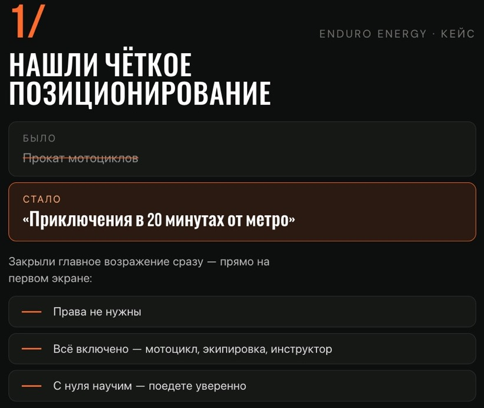
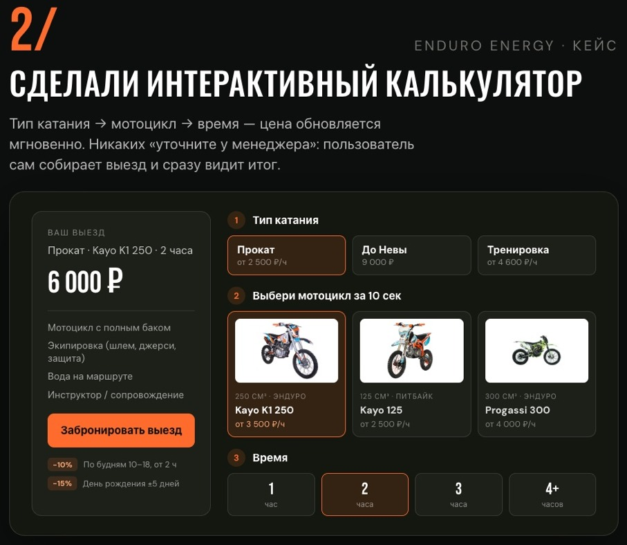
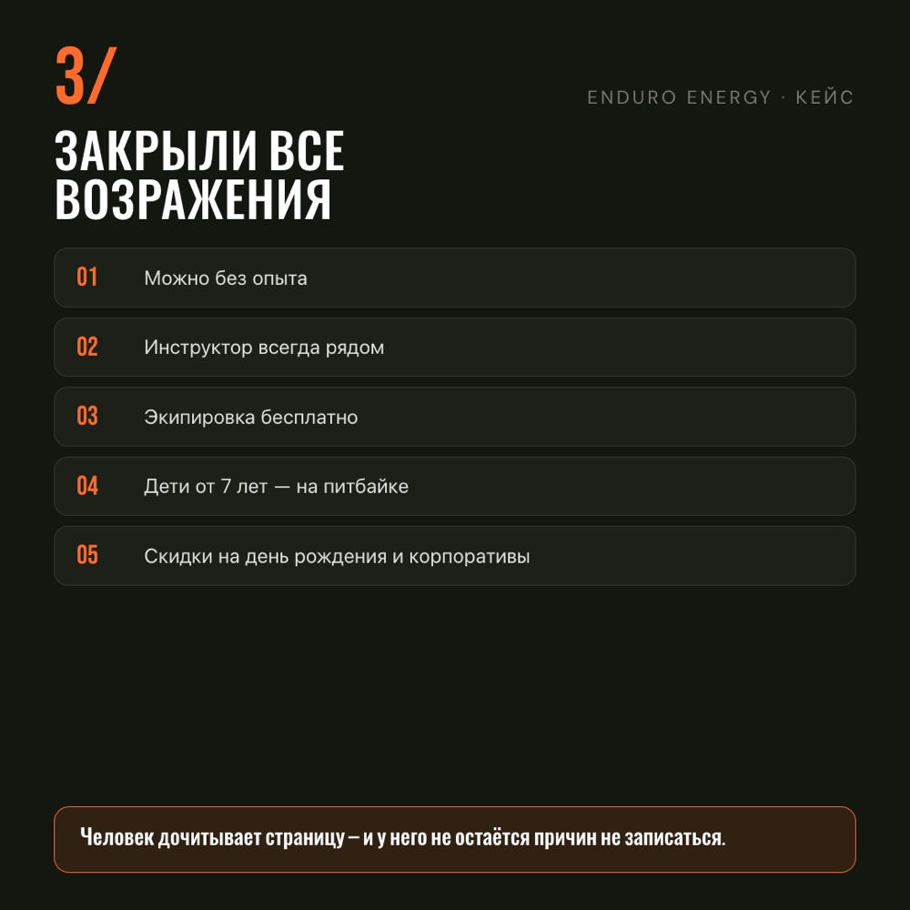
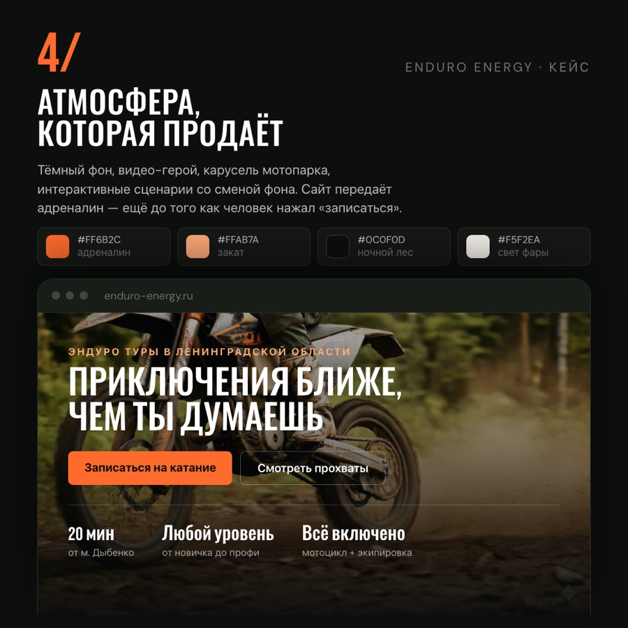
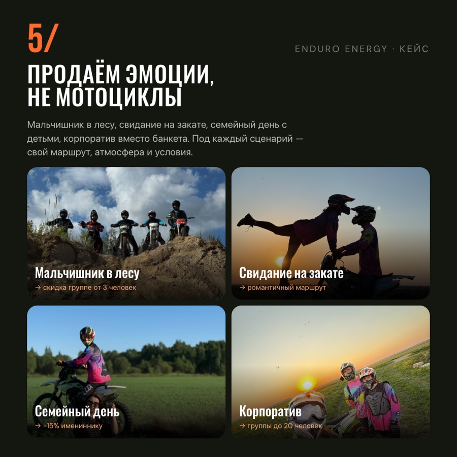
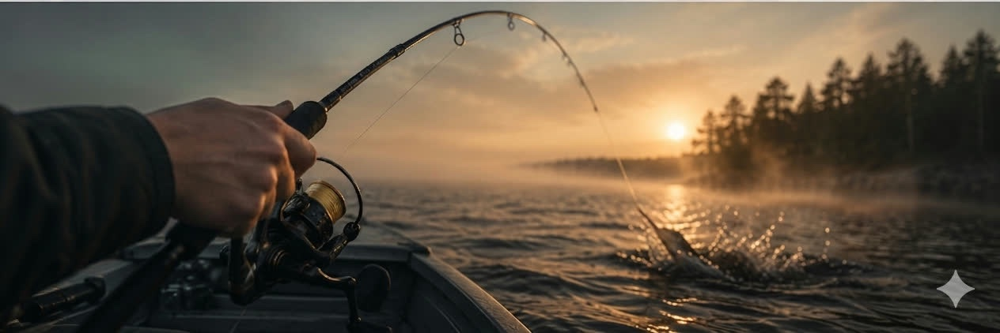

<!--
  CASE PAGE TEMPLATE — currently populated with ENDURO ENERGY.
  Reused for Ladoga / Ilona / etc. later: duplicate this file, then only
  touch the marked "CONTENT" blocks / the .canvas coordinates. Structure
  stays identical across cases.

  ART DIRECTION (v9): intro + full-bleed hero video are frozen. Everything
  after is a strict 12-column CSS Grid (.canvas) holding the ORIGINAL,
  UNRETOUCHED case slides — every object, placeholder and caption is a
  real grid child placed with grid-column:start/span, never an arbitrary
  left:Xvw. Vertical rhythm stays irregular via explicit grid-row:start/
  span on a fine 1vw auto-row unit; different-column objects deliberately
  share a row band (e.g. Positioning + Calculator, Final-view + Result)
  while same-column objects stay sequential to avoid literal overlap. No
  card chrome, no cropping (object-fit: contain, natural aspect
  preserved). FOUR slots have no matching real asset handed off for this
  yet — mobile-adaptation screen, desktop-scroll recording, final-website
  view, and the live-site URL (both link instances) — all four stay
  intentional empty placeholders. Do not fill a placeholder with a
  reused/found asset on your own judgment, even if one technically
  exists elsewhere in the project — ask first. This file only art-directs
  placement; the slides carry all the storytelling themselves. Do not add
  typography, borders, or containers around the slides, and do not touch
  what's printed on them.

  Shares header markup with the homepage (index.html) verbatim. The color
  tokens (--bg/--ink/--line-soft) intentionally diverge from index.html's
  flat black as of the "premium/cinematic/atmospheric" art-direction pass —
  a warm near-black + very soft ember/forest haze instead of pure black.
  This was an explicit, scoped request for THIS case page only; index.html
  and other case pages stay untouched.
-->
<meta charset="utf-8">
<meta name="viewport" content="width=device-width, initial-scale=1">
<title>Enduro Energy — TINA DIGITAL</title>
<link rel="preconnect" href="https://fonts.googleapis.com">
<link rel="preconnect" href="https://fonts.gstatic.com" crossorigin>
<link href="https://fonts.googleapis.com/css2?family=Manrope:wght@400;500;600;700;800&display=swap" rel="stylesheet">

<style>
  :root{
    /* case-page-only palette — intentionally diverges from index.html's flat
       black per Christina's direct request for this page; homepage untouched */
    --bg:#0d0e0c; /* near-black with a slight warm/forest undertone, not pure #000 */
    --ink:#f0ede7;
    --ink-dim:#a4a29c;
    --ink-faint:#7d7b74; /* raised from #65635e — old value was ~3.3:1 on --bg, fails WCAG AA (4.5:1) */
    --line-soft: rgba(240,237,231,.09);
    --accent:#c1663f;
    --ease: cubic-bezier(.22,.8,.28,1);
  }
  *{ box-sizing:border-box; }
  html{ background:var(--bg); }
  body{
    margin:0; color:var(--ink); font-family:'Manrope', ui-sans-serif, system-ui, -apple-system, sans-serif; overflow-x:hidden;
    /* local lighting only, tied to actual content position (not fixed to the
       viewport) — one soft ember glow near the hero. Two more local, even
       fainter highlights sit behind the functional-video scene and the
       result climax further down (see .obj-calc-video and .result-conclusion). */
    background: radial-gradient(ellipse 55% 34% at 88% 4%, rgba(160,82,45,.10), transparent 58%), var(--bg);
  }
  img, video{ max-width:100%; display:block; }

  /* ============ HEADER — identical to homepage ============ */
  .cx-top{ position:relative; z-index:3; display:flex; align-items:center; justify-content:space-between; padding: clamp(20px,3vw,40px) clamp(20px,4vw,56px) 0; }
  .cx-brand{ display:flex; flex-direction:column; gap:2px; color:inherit; text-decoration:none; }
  .cx-brand-name{ font-size:14px; font-weight:700; letter-spacing:.02em; }
  .cx-brand-role{ font-size:12px; color:var(--ink-dim); letter-spacing:.03em; }
  .cx-nav{ display:flex; align-items:center; gap:28px; position:absolute; left:50%; top: clamp(20px,3vw,40px); transform:translateX(-50%); }
  @media (max-width: 980px){ .cx-nav{ display:none; } }
  .cx-nav a{ font-size:13px; color:var(--ink-dim); text-decoration:none; transition:color .3s var(--ease); }
  .cx-nav a:hover{ color:var(--ink); }
  .cx-back{ font-size:13px; color:var(--ink-dim); text-decoration:none; display:inline-flex; align-items:center; gap:8px; transition:color .3s var(--ease); }
  .cx-back:hover{ color:var(--ink); }
  .cx-back .arrow{ transition: transform .35s var(--ease); }
  .cx-back:hover .arrow{ transform: translateX(-4px); }

  .case{ position:relative; z-index:1; }
  .case-reveal{ opacity:0; transform:translateY(52px); transition: opacity .85s var(--ease-2), transform .85s var(--ease-2); }
  .case-reveal.is-in{ opacity:1; transform:none; }
  /* premium editorial easing for the new motion pass — kept separate from
     --ease (used by pre-existing hovers etc.) to avoid touching those */
  :root{ --ease-2: cubic-bezier(.16,1,.3,1); }
  @media (prefers-reduced-motion: reduce){
    .case-reveal, .case-intro *, .line-inner, .num-inner, .media-mask, .result-num-mask{
      transition-duration:.001s !important; animation:none !important;
    }
  }

  .tag{ display:inline-flex; align-items:baseline; gap:8px; font-size:12px; color:var(--ink-faint); letter-spacing:.01em; white-space:nowrap; }
  .tag b{ font-weight:600; font-style:italic; color:var(--ink); }
  .tag::before{ content:''; width:14px; height:1px; background:var(--accent); }

  /* ============ 1. INTRO — frozen ============ */
  .case-intro{ position:relative; min-height: 82vh; display:flex; flex-direction:column; justify-content:flex-end; padding: 0 clamp(16px,3vw,40px) clamp(40px,6vw,72px); overflow:hidden; }
  .case-intro-num{ position:absolute; top:-4vw; right:2vw; z-index:0; font-size:min(46vw, 620px); font-weight:800; line-height:1; color:var(--line-soft); user-select:none; pointer-events:none; overflow:hidden; }
  .case-intro-num .num-mask{ display:block; overflow:hidden; }
  .case-intro-num .num-inner{ display:block; transform:translateY(110%); opacity:0; transition: transform 1.1s var(--ease-2), opacity 1.1s var(--ease-2); transition-delay:.05s; }
  .case-intro.is-in .case-intro-num .num-inner{ transform:translateY(0); opacity:1; }
  .case-intro .eyebrow{ display:flex; align-items:center; gap:10px; font-size:13px; color:var(--ink-dim); letter-spacing:.1em; text-transform:uppercase; margin:0 0 clamp(16px,2.4vw,26px); position:relative; z-index:1; opacity:0; transform:translateY(10px); }
  .case-intro .eyebrow::before{ content:''; width:26px; height:1px; background:var(--accent); }
  .case-title{ position:relative; z-index:1; font-weight:800; letter-spacing:-.035em; line-height:.85; font-size: clamp(4.2rem, 13.5vw, 11.5rem); margin:0; }
  .case-title .line-mask{ display:block; overflow:hidden; }
  .case-title .line-inner{ display:block; transform:translateY(110%); opacity:0; transition: transform 1s var(--ease-2), opacity 1s var(--ease-2); }
  .case-intro.is-in .case-title .line-inner{ transform:translateY(0); opacity:1; }
  .case-intro.is-in .case-title .line-mask:nth-child(2) .line-inner{ transition-delay:.1s; }
  .case-intro-foot{ position:relative; z-index:1; margin-top: clamp(24px,3vw,36px); display:flex; justify-content:space-between; align-items:flex-end; flex-wrap:wrap; gap:16px; padding-top: clamp(18px,2.4vw,26px); border-top:1px solid var(--line-soft); opacity:0; transform:translateY(10px); }
  .case-intro-foot p{ margin:0; font-size:15px; color:var(--ink-dim); max-width:34ch; }
  .case-meta-row{ display:flex; gap: clamp(24px,3vw,44px); }
  .case-meta-row div{ font-size:12px; letter-spacing:.03em; color:var(--ink-faint); }
  .case-meta-row strong{ display:block; margin-bottom:5px; font-size:12px; font-weight:600; color:var(--ink-dim); }
  .case-intro.is-in .eyebrow, .case-intro.is-in .case-intro-foot{ opacity:1; transform:none; transition: opacity 1s var(--ease), transform 1s var(--ease); }
  .case-intro.is-in .case-intro-foot{ transition-delay:.28s; }

  /* ============ 2. FULL-BLEED SITE VIDEO — frozen ============ */
  .case-full{ width:100vw; margin-left:calc(50% - 50vw); position:relative; overflow:hidden; }
  /* the generic .case-reveal fade/slide is overridden here — this container
     uses its own cinematic mask reveal on the video instead (see below) */
  .case-full.case-reveal{ opacity:1; transform:none; }
  .case-full video{
    width:100%; display:block;
    clip-path: inset(100% 0 0 0); transform:scale(1.045);
    transition: clip-path 1.3s var(--ease-2), transform 1.4s var(--ease-2);
  }
  .case-full.is-in video{ clip-path: inset(0 0 0 0); transform:scale(1); }
  .case-full .tag{ position:absolute; left: clamp(16px,3vw,40px); bottom: clamp(16px,3vw,32px); z-index:2; }
  /* the recorded page's own floating Telegram/chat-widget buttons show in the
     bottom-left corner — these are the site's standard contact widgets, not
     personal data, so left visible as-is (a prior corner-fade mask here read
     as a crude, ugly smudge and has been removed). */

  /* ============ LIVE WEBSITE LINK — small editorial line, appears twice ============
     No confirmed live URL exists in the project files — this stays an
     inert, honestly-labelled placeholder (not a fake href) until Christina
     supplies the real one. Left edge matches the canvas's outer margin,
     i.e. the grid's column-1 line. */
  .live-link{
    max-width:1600px; margin:0 auto; padding: clamp(18px,2.4vw,28px) clamp(56px,6vw,64px);
    display:flex; align-items:baseline; gap:12px; flex-wrap:wrap;
    text-decoration:none; width:auto;
  }
  .live-link-text{ font-size:14px; font-weight:700; color:var(--ink); letter-spacing:.02em; }
  .live-link-text .arrow{ color:var(--accent); display:inline-block; transition:transform .3s var(--ease); }
  .live-link-note{ font-size:11px; color:var(--ink-faint); letter-spacing:.04em; }
  .live-link.is-top{ padding-top:0; }
  .live-link:hover .arrow{ transform:translate(5px,-5px); }
  .live-link:hover .live-link-note{ color:var(--ink-dim); }

  /* ============ EDITORIAL CANVAS ============
     Strict 12-column grid. Every object, placeholder and caption is a
     real grid child placed with grid-column:start/span — no arbitrary
     left:Xvw. grid-auto-rows is a fine 1vw unit; each item gets an
     explicit grid-row:start/span. Objects whose columns don't overlap are
     deliberately given overlapping rows so they read as one visual band
     (Positioning+Calculator, Emotions+Mobile, Final-view+Result); objects
     that DO share columns are kept sequential to avoid literal collision.
     Items may visually overflow their nominal row span (browsers don't
     clip that) — intentional, not a bug. */
  .canvas{
    position:relative; width:100%; max-width:1900px; margin: clamp(20px,3vw,32px) auto 0;
    padding: 0 clamp(56px,6vw,64px);
    display:grid; grid-template-columns: repeat(12, 1fr);
    column-gap: clamp(20px,2vw,24px); row-gap:0;
    /* THE BUG: 1vw scales with the raw viewport, but columns are capped by
       max-width. On any screen wider than max-width, row-height (vw) kept
       growing while column-width (capped) didn't — rows and columns fell
       out of sync, so captions drifted from their media, gaps ballooned,
       and everything read as "too small in a sea of empty space" on wide
       monitors. First fix attempt used a container-query unit (cqw), which
       is more likely to fail silently in some browsers when combined with
       grid-auto-rows — switched to min(), universally supported since long
       before container queries existed: below 1900px it behaves exactly
       like 1vw; at/above 1900px it locks to 19px (1% of the 1900px cap),
       matching the columns exactly the way cqw was meant to. */
    grid-auto-rows: min(1vw, 19px);
  }
  /* two more local, very faint highlights — tied to actual row position in
     the same 1vw unit as the grid, not fixed to the viewport. Deliberately
     under the visible-opacity threshold most viewers will consciously
     register: felt as depth, not seen as a gradient. */
  .canvas::before, .canvas::after{
    content:''; position:absolute; left:0; right:0; z-index:0; pointer-events:none;
  }
  .canvas::before{ top:min(44vw,836px); height:min(70vw,1330px); background: radial-gradient(ellipse 45% 55% at 55% 45%, rgba(40,52,39,.10), transparent 65%); }
  .canvas::after{  top:min(230vw,4370px); height:min(75vw,1425px); background: radial-gradient(ellipse 50% 55% at 60% 50%, rgba(160,82,45,.09), transparent 65%); }
  .canvas figure{ margin:0; min-width:0; align-self:start; position:relative; z-index:1; }
  .canvas img, .canvas video{
    width:100%; height:auto; object-fit:contain; border:1px solid var(--line-soft);
    transform:scale(1.035); transition: transform 1.2s var(--ease-2);
  }
  .canvas .case-reveal.is-in img, .canvas .case-reveal.is-in video{ transform:scale(1); }
  /* micro-captions: their own lighter, faster rhythm — appear slightly
     before the media they describe, not the heavier card/media motion */
  .canvas .cap.case-reveal{ transform:translateY(20px); transition: opacity .55s var(--ease-2), transform .55s var(--ease-2); }
  /* deliberate stagger inside the two multi-object scenes — first object
     at 0s, each supporting object arriving 120–180ms after the previous */
  .obj-calc-video.case-reveal{ transition-delay: .15s; }
  .cap-calc-video.case-reveal, .cap-calc-video-sub.case-reveal{ transition-delay: .08s; }
  .obj-moto-video.case-reveal{ transition-delay: .3s; }
  .cap-moto-video.case-reveal{ transition-delay: .24s; }
  .obj-emotions.case-reveal{ transition-delay: .12s; }
  .cap-emotions.case-reveal{ transition-delay: .06s; }
  .obj-mobile-placeholder.case-reveal{ transition-delay: .26s; }
  .cap-mobile.case-reveal{ transition-delay: .2s; }
  .canvas .cap, .canvas .live-link, .result-conclusion{ position:relative; z-index:1; }
  .canvas .cap{
    display:flex; align-items:baseline; gap:8px; align-self:start;
    font-size:12px; color:var(--ink-dim); letter-spacing:.04em; white-space:nowrap;
  }
  .canvas .cap b{ color:var(--accent); font-weight:700; font-style:normal; letter-spacing:.03em; }
  .canvas .cap span{ color:var(--ink-dim); }
  /* ============ SCENE A — strategy: Card1 + Card2 coexist, no overlap.
     Both source images are actually 1:1 square — Card2 spans 6 columns
     (wider than Card1's 4), so at 1:1 it needs ~46 rows, not the ~24 it
     had (QA pass: that mismatch let the image bleed straight down over
     its own caption, and over the edge of the media). Row-span here is
     derived from each card's real aspect ratio at its column width, not
     guessed. */
  .obj-positioning{ grid-column: 2 / span 4; grid-row: 1 / span 26; }
  .cap-positioning{ grid-column: 2 / span 4; grid-row: 28 / span 4; }
  .obj-calc{        grid-column: 7 / span 6; grid-row: 1 / span 40; }
  .cap-calc{        grid-column: 7 / span 6; grid-row: 42 / span 4; }

  /* ============ SCENE B — functional product: Card3 upper-left, Calculator
     video upper-right/dominant. Card3[1,5) vs Calc-video[6,13): no column
     overlap → free to coexist. Motorcycle Park no longer shares this field
     (promoted to its own wide scene below) so Card3 is free to run its
     full natural height instead of being cut short to dodge it — same
     square-aspect mismatch as Card2 above (needed ~31 rows, had 26). */
  .obj-objections{  grid-column: 1 / span 4; grid-row: 48 / span 31; }
  .cap-objections{  grid-column: 1 / span 4; grid-row: 81 / span 4; }
  .obj-calc-video{  grid-column: 6 / span 7; grid-row: 56 / span 28; }
  .cap-calc-video{  grid-column: 6 / span 7; grid-row: 86 / span 4; }
  .cap-calc-video-sub{ grid-column: 6 / span 7; grid-row: 90 / span 4; font-size:11px; color:var(--ink-faint); letter-spacing:.02em; margin:0; }

  /* ============ MOTORCYCLE PARK — promoted to its own large wide scene
     (was a small 5-column clip squeezed into Scene B). 10 columns, caption
     aligned to its left edge just above it, a deliberate pause between the
     functional UX thinking above and the emotional/visual scenes below. */
  .cap-moto-video{  grid-column: 2 / span 4; grid-row: 102 / span 4; }
  .obj-moto-video{  grid-column: 2 / span 6; grid-row: 108 / span 23; }

  /* ============ SCENE C — atmosphere/emotion: THREE objects share one field
     (Card4 upper-right, Card5 large lower-left starting partway through
     Card4's own span, Mobile beside Card5 sharing most of its row range).
     Card5[2,7) vs Mobile[8,10): no overlap → free to coexist. Mobile[8,10)
     DOES share col9 with Atmosphere[9,13) → kept sequential in rows. */
  .cap-atmosphere{  grid-column: 9 / span 4; grid-row: 136 / span 4; }
  .obj-atmosphere{  grid-column: 9 / span 4; grid-row: 140 / span 30; }
  .obj-emotions{    grid-column: 2 / span 5; grid-row: 155 / span 38; }
  .cap-emotions{    grid-column: 2 / span 5; grid-row: 195 / span 4; }
  .obj-mobile-placeholder{ grid-column: 8 / span 2; grid-row: 173 / span 25; aspect-ratio: 9 / 16; }
  .cap-mobile{      grid-column: 8 / span 2; grid-row: 198 / span 4; }

  /* ============ SCENE D — the full desktop scroll: enters with only a small
     gap after Scene C (still feels nearby), one continuous real recording
     of the finished site (reviews/FAQ/calculator sections pass through it —
     not split out), one of the largest objects on the page */
  .cap-desktop-scroll{      grid-column: 2 / span 2; grid-row: 208 / span 4; }
  .cap-desktop-scroll-sub{  grid-column: 9 / span 3; grid-row: 208 / span 4; text-align:right; font-size:12px; color:var(--ink-dim); letter-spacing:.04em; margin:0; }
  .obj-desktop-scroll{ grid-column: 2 / span 10; grid-row: 212 / span 44; }

  /* ============ CONCLUSION — numbers, not another card ============
     Real verified results only (5.0 / 500+, from the Result slide itself).
     No frames, no cards, no icons — the numbers ARE the visual objects. */
  .result-conclusion{ grid-column: 1 / span 12; grid-row: 262 / span 22; display:grid; grid-template-columns: repeat(12, 1fr); column-gap: clamp(20px,2vw,24px); align-items:end; }
  .result-label{ grid-column: 1 / span 2; }
  .result-label .cap{ margin-bottom:14px; }
  .result-label h3{ margin:0; font-size:clamp(1.1rem,2vw,1.6rem); font-weight:700; letter-spacing:-.01em; color:var(--ink); }
  .result-num-block{ display:flex; flex-direction:column; }
  .result-num-block .num{ font-weight:800; letter-spacing:-.03em; line-height:.85; color:var(--ink); margin:0; overflow:hidden; }
  .result-num-block .num-mask{ display:block; overflow:hidden; }
  .result-num-block .num-inner{ display:block; transform:translateY(105%); opacity:0; transition: transform 1.05s var(--ease-2), opacity 1.05s var(--ease-2); }
  .result-conclusion.is-in .result-num-block .num-inner{ transform:translateY(0); opacity:1; }
  .result-conclusion.is-in .result-trips .num-inner{ transition-delay:.15s; }
  .result-num-block .label{ margin:8px 0 0; font-size:12px; letter-spacing:.06em; text-transform:uppercase; color:var(--ink-dim); opacity:0; transform:translateY(8px); transition: opacity .5s var(--ease-2) .5s, transform .5s var(--ease-2) .5s; }
  .result-conclusion.is-in .result-num-block .label{ opacity:1; transform:none; }
  .result-rating{ grid-column: 4 / span 3; }
  .result-rating .num{ font-size:clamp(3.5rem,9vw,8rem); }
  .result-trips{ grid-column: 8 / span 4; }
  .result-trips .num{ font-size:clamp(4.2rem,11vw,10rem); }
  .canvas .live-link{ grid-column: 1 / span 5; grid-row: 290 / span 5; padding:0; align-self:start; }
  @media (max-width: 860px){
    .result-conclusion{ display:flex; flex-direction:column; align-items:flex-start; gap:24px; }
  }

  /* ============ BACKGROUND WORDS — same treatment as the intro's "01" ============
     Real project vocabulary only, never invented text and never section
     numbering. Sits behind its paired visual (earlier in DOM, no z-index
     conflict) — only the part that peeks past the visual's edges actually
     shows, exactly like "01" peeking from behind the intro title. Grid-
     aligned, may bleed past its own column into neighbours. */
  .bg-word{
    grid-row: 1 / span 1; align-self:start; justify-self:start;
    font-weight:800; line-height:.82; letter-spacing:-.02em;
    color:var(--line-soft); font-size:clamp(2.6rem,7vw,7rem);
    white-space:nowrap; pointer-events:none; user-select:none; margin:0;
  }
  /* word-calculator removed — read as detached/unnecessary next to the
     already-finished Calculator card (QA pass). word-mobile removed
     earlier — Christina: "feels generic/template-like"; a small
     (responsive) annotation replaces it, letting the real mobile screen be
     the visual. word-result removed too — replaced by .result-conclusion. */
  @media (max-width: 860px){ .bg-word{ display:none; } }

  /* shared empty-placeholder look — dark neutral fill, thin stroke, tiny technical label.
     final-view placeholder and the separate Result video card were removed:
     the Result step is now pure typography only (see .result-conclusion),
     and the single desktop-scroll video already proves the finished site. */
  .obj-mobile-placeholder{
    background: var(--line-soft);
    border: 1px solid var(--line-soft);
    display:flex; align-items:center; justify-content:center; text-align:center;
    padding: 10px;
  }
  .obj-mobile-placeholder span{
    font-size:10px; letter-spacing:.06em; text-transform:uppercase; color:var(--ink-faint); line-height:1.6;
  }

  @media (max-width: 860px){
    .canvas{ display:flex; flex-direction:column; align-items:center; gap:56px; padding:0 20px; margin-top:60px; }
    .canvas figure, .canvas .cap, .obj-mobile-placeholder, .canvas .live-link{
      grid-column:auto !important; grid-row:auto !important;
      width:100% !important; max-width:520px;
    }
    .obj-mobile-placeholder{ max-width:220px !important; }
    .live-link{ padding-left:20px; padding-right:20px; }
  }

  /* ============ NEXT CASE — a teaser, not the page's visual climax ============
     Was full-bleed + 5.2rem title (reading as bigger than the Enduro case
     itself). Now a modest grid-anchored strip: small image, small type. */
  .case-next{
    display:grid; grid-template-columns:repeat(12,1fr); column-gap:clamp(20px,2vw,24px);
    align-items:center; text-decoration:none; color:inherit;
    max-width:1600px; margin: clamp(50px,5vw,80px) auto 0; padding: 0 clamp(56px,6vw,64px) clamp(60px,8vw,100px);
  }
  .case-next-media{ grid-column: 1 / span 4; aspect-ratio: 4/3; overflow:hidden; }
  .case-next-media img{ width:100%; height:100%; object-fit:cover; transition: transform 1.2s var(--ease); }
  .case-next:hover .case-next-media img{ transform: scale(1.05); }
  .case-next-text{ grid-column: 6 / span 5; text-align:left; }
  .case-next-label{ font-size:11px; font-weight:600; letter-spacing:.14em; text-transform:uppercase; color:var(--ink-faint); margin:0 0 10px; }
  .case-next-title{ font-weight:700; letter-spacing:-.01em; font-size: clamp(1.4rem, 2.2vw, 1.9rem); line-height:1.2; margin:0; transition: color .35s var(--ease); }
  .case-next-title .arrow{ display:inline-block; margin-left:6px; color:var(--accent); transition:transform .3s var(--ease); }
  .case-next:hover .case-next-title{ color:var(--accent); }
  .case-next:hover .case-next-title .arrow{ transform:translateX(4px); }
  @media (max-width: 860px){
    .case-next{ display:flex; flex-direction:column; align-items:flex-start; gap:16px; padding: 0 20px clamp(60px,8vw,100px); }
    .case-next-media{ width:100%; }
    .case-next-text{ text-align:left; }
  }
</style>

<header class="cx-top">
  <a class="cx-brand" href="index.html">
    <span class="cx-brand-name">TINA DIGITAL</span>
    <span class="cx-brand-role">Web Designer</span>
  </a>
  <nav class="cx-nav">
    <a href="index.html#work">Проекты</a>
    <a href="index.html#about">Обо мне</a>
    <a href="index.html#contact">Контакты</a>
  </nav>
  <a class="cx-back" href="index.html"><span class="arrow" aria-hidden="true">←</span> Все проекты</a>
</header>

<main class="case">

  <!-- ============ 1. INTRO — frozen ============ -->
  <section class="case-intro" id="caseIntro">
    <span class="case-intro-num" aria-hidden="true"><span class="num-mask"><span class="num-inner">01</span></span></span>
    <p class="eyebrow">Case 01 — 2026</p>
    <h1 class="case-title"><span class="line-mask"><span class="line-inner">ENDURO</span></span><span class="line-mask"><span class="line-inner">ENERGY</span></span></h1>
    <div class="case-intro-foot">
      <p>Commercial website. Strategy, UX/UI, development.</p>
      <div class="case-meta-row">
        <div><strong>Role</strong>Web design, UX/UI</div>
        <div><strong>Year</strong>2026</div>
      </div>
    </div>
  </section>

  <!-- live URL not yet confirmed for this project — honest placeholder, not a guessed link -->
  <a class="live-link is-top case-reveal" href="https://enduro-energy.ru" target="_blank" rel="noopener">
    <span class="live-link-text">Смотреть сайт <span class="arrow">↗</span></span>
    <span class="live-link-note">enduro-energy.ru</span>
  </a>

  <!-- ============ 2. SITE VIDEO — frozen ============ -->
  <div class="case-full case-reveal">
    <video autoplay muted loop playsinline src="assets/enduro/case-full.mp4"></video>
  </div>

  <!-- ============ EDITORIAL CANVAS — exact coordinates, slides untouched ============ -->
  <div class="canvas">
    <figure class="obj-positioning case-reveal">
      
    </figure>
    <p class="cap case-reveal cap-positioning"><b>(strategy)</b><span>позиционирование</span></p>
    <figure class="obj-calc case-reveal">
      
    </figure>
    <p class="cap case-reveal cap-calc"><b>(project)</b><span>ENDURO ENERGY · Website</span></p>
    <figure class="obj-objections case-reveal">
      
    </figure>
    <p class="cap case-reveal cap-objections"><b>(ux)</b><span>работа с возражениями</span></p>
    <figure class="obj-calc-video case-reveal">
      <video autoplay muted loop playsinline src="assets/enduro/obj-calc-video.mp4"></video>
    </figure>
    <p class="cap case-reveal cap-calc-video"><b>(interaction)</b><span>интерактивный калькулятор</span></p>
    <p class="cap case-reveal cap-calc-video-sub">тип катания → мотоцикл → время → стоимость</p>
    <figure class="obj-moto-video case-reveal">
      <video autoplay muted loop playsinline src="assets/enduro/obj-moto-video.mp4"></video>
    </figure>
    <p class="cap case-reveal cap-moto-video"><b>(product)</b><span>мотопарк</span></p>
    <figure class="obj-atmosphere case-reveal">
      
    </figure>
    <p class="cap case-reveal cap-atmosphere"><b>(visual)</b><span>атмосфера</span></p>
    <figure class="obj-emotions case-reveal">
      
    </figure>
    <p class="cap case-reveal cap-emotions"><b>(scenario)</b><span>сценарии поездок</span></p>
    <figure class="obj-mobile-placeholder case-reveal" aria-hidden="true">
      <span>[ MOBILE WEBSITE ]</span>
    </figure>
    <p class="cap case-reveal cap-mobile"><b>(responsive)</b><span>mobile website</span></p>
    <figure class="obj-desktop-scroll case-reveal">
      <video autoplay muted loop playsinline src="assets/enduro/obj-desktop-scroll.mp4"></video>
    </figure>
    <p class="cap case-reveal cap-desktop-scroll"><b>(website)</b></p>
    <p class="cap case-reveal cap-desktop-scroll-sub">Enduro Energy — desktop</p>
    <div class="result-conclusion case-reveal">
      <div class="result-label">
        <p class="cap case-reveal"><b>(result)</b></p>
        <h3>Результат</h3>
      </div>
      <div class="result-num-block result-rating">
        <p class="num"><span class="num-mask"><span class="num-inner">5.0</span></span></p>
        <p class="label">Рейтинг на Яндекс Картах</p>
      </div>
      <div class="result-num-block result-trips">
        <p class="num"><span class="num-mask"><span class="num-inner">500+</span></span></p>
        <p class="label">Выездов</p>
      </div>
    </div>
    <a class="live-link case-reveal" href="https://enduro-energy.ru" target="_blank" rel="noopener">
      <span class="live-link-text">Смотреть сайт <span class="arrow">↗</span></span>
      <span class="live-link-note">enduro-energy.ru</span>
    </a>
  </div>

  <!-- ============ NEXT CASE ============ -->
  <a class="case-next" href="index.html#work">
    <div class="case-next-media"></div>
    <div class="case-next-text">
      <p class="case-next-label">Next case</p>
      <p class="case-next-title">Лодки на Ладоге <span class="arrow">→</span></p>
    </div>
  </a>

</main>

<script>
(function(){
  "use strict";
  requestAnimationFrame(function(){
    requestAnimationFrame(function(){
      document.getElementById('caseIntro').classList.add('is-in');
    });
  });
  var revealEls = document.querySelectorAll('.case-reveal');
  if ('IntersectionObserver' in window){
    // re-triggers every time an element crosses the threshold in EITHER
    // direction (not just once) — scrolling back up replays the reveal
    var io = new IntersectionObserver(function(entries){
      entries.forEach(function(e){
        e.target.classList.toggle('is-in', e.isIntersecting);
      });
    }, { threshold: 0.1, rootMargin: '0px 0px -4% 0px' });
    revealEls.forEach(function(el){ io.observe(el); });
  } else {
    revealEls.forEach(function(el){ el.classList.add('is-in'); });
  }

  // intersection-based playback: real videos only play while actually
  // visible, so the page isn't rendering every clip at once off-screen
  var videos = document.querySelectorAll('.canvas video, .case-full video');
  if ('IntersectionObserver' in window && videos.length){
    var vio = new IntersectionObserver(function(entries){
      entries.forEach(function(e){
        if (e.isIntersecting){ e.target.play().catch(function(){}); }
        else { e.target.pause(); }
      });
    }, { threshold: 0.15 });
    videos.forEach(function(v){ vio.observe(v); });
  }
})();
</script>
